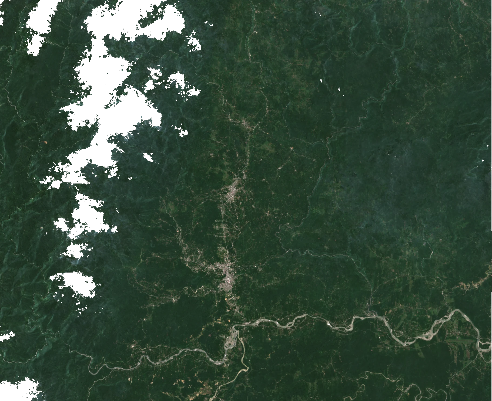

Andes Pulso
Mira la historia. Comprueba la evidencia.
- Video
- Datos
- Método
- Fuentes
Ecuador, explicado con evidencia
Explora sus paisajes, entiende sus cambios y consulta los datos detrás de cada historia.

Foco territorial · NapoAndes Pulso
Biblioteca de Ecuador
Investigación sobre Ecuador, conectada con los temas y datos del atlas.
Consultar estudiosUn proyecto independiente de divulgación y datos abiertos. Observaciones, interpretaciones y límites se mantienen separados. No es un sistema de alerta ni un servicio oficial.
Cómo leer la evidencia ↗